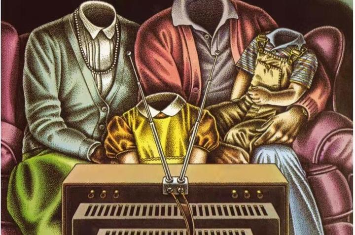

感悟两则
两则感悟都是关于娱乐的，讲一讲娱乐至死和先完成工作再娱乐，试图探寻一种最好的与娱乐共存的方式。
一、娱乐至死
世界的娱乐化越来越严重，短视频行业的兴起和火爆，让那个关于娱乐至死和碎片化的担忧和预言越来越成为现实。感觉自己也常常陷入其中，很难挣脱。我现在一边刷着tiktok一边写这个文章，看到很多外国人同样直播pk，直播带货，突然有种不真实的感觉。我仔细想了很久，如果让我选择生活在这个时代还是选择十年前，我会毫不犹豫地选择后者。
还记得十年前，我每天放学回家的第一件事情就是边嗑瓜子边读报纸，报纸上有趣的新闻和图片便是我的娱乐。那时的我当然也有手机，只不过当时短视频和直播并未兴起，我会拿手机来打游戏、看电影，我记得当时有一个叫做欧几里得的几何画图游戏，非常有意思。我现在的体会是，打游戏、看电影、追剧的娱乐方式都比看短视频好，因为你可以长时间的focus在一件事上，慢慢地体会和享受这件事带给你的快乐。而短视频，正如一篇文章所说，是精心设计好的浓缩版激素，在一瞬间释放大量的吸引，很难停下。
我最近一直在问自己一个问题，你有多久没有完整地看完一本书了？我认真回想了一下，上一次应该是在2022年的清明节，我用kindle看完了《白夜行》。上上次？那要追溯回高中时代了，我记得不太真切，仿佛是2020年疫情期间读的《百年孤独》（我又后来想起来了，应该是2021年高考完的暑假第二遍读《长安十二时辰》？当时每天睡觉前看《读者》或是《意林》里的文章和笑话是一天最幸福的事，现在想想我书房里有一书架的书，每本都是以前读过的）。获得了手机之后，我的娱乐方式发生了渐变，现在的我被娱乐的洪流所侵蚀，俨然面目全非。这非常值得反省。我现在需要尝试重新开始读书，重新开始读杂志，重新开始接触纸媒。如何在娱乐化的洪流中坚守内心？我记得高中甚至初中的我就接触过这个问题，只不过当时的我根本没有，或者是那个时代很少有“娱乐”，所以完全没有认识。反而是现在越发感觉这个问题需要深刻的思考（苦笑）。
二、娱乐和工作的关系
如何处理娱乐和工作的关系？如何选择正确的娱乐方式？首先我需要坚决地执行先工作再娱乐的原则，这个原则在初中、高中甚至大学的前几年都遵守的很好，我想是因为那时叫做“学习”，而不是工作，也就是只需要完成特定任务，所以比较容易遵循。而现在迈入科研，我很难说接下来要做什么，也不会有人告诉我特定的任务是什么（对于一个放养的导师来说），所以需要自己给自己找活做，比如我之前提过的学习、思考、读文献、总结成输出、锻炼这五样每日必做。永远记住工作第一，因为其实很多时候焦虑恰恰来自于愧疚工作没有认真完成，而不是来自于娱乐和休息不足。
那是否意味着不要娱乐了呢？当然不是，娱乐对思维有着非常非常好的放松和调节作用，前提是在工作做完之后的娱乐，而不是侵占工作时间的娱乐——我记得感恩节那几天放假去金门大桥转了转，刚出门的时候其实是感觉精神萎靡疲惫的，但是走了两万步回来之后却精神矍铄，晚上看了成龙的《尖峰时刻》，幸福感拉满。所以其实自己感觉的疲惫其实是假的，是可以通过大自然的洗礼冲刷，也是可以通过自我心态的调节驱逐。然后好像第二天，我动力十足地干了超高效率的一天的活，整个人一反常态，神清气爽。这个体验真真切切地告诉我，娱乐确实有舒缓情绪，为接下来的工作积累能量的效果，但是需要选择合适的娱乐方式。
刷短视频显然不是一种好的娱乐方式，在耗费你精力的同时你并不会得到什么，因为大部分的短视频都是烂梗、擦边、魔性的垃圾。而且我发现短视频看多了，我的心境会变的浮躁，越来越难以进入一种需要慢慢沉浸的娱乐或者工作中。比如让我看一部电影？无聊，有什么意思，不如看解说！让我追一部剧或者动漫？无聊，有什么意思，不如看解说！让我打3A大作？无聊，有什么意思，无聊！其实很多时候我的心态都是如此，但是，往往很多时候都是需要耐心慢慢进入才能真正被它有意思的地方吸引，比如当年看《神雕侠侣》和《天龙八部》，我的兴致都是指数上升，到后来一天大部分时间都在看。而短视频恰恰剥夺了这种沉浸的能力，增高了感到幸福的阈值，连静下心来沉浸在一部武侠小说里都做不到，还如何静下心来沉浸在科研中呢？
我要尝试把原来刷短视频的时间平移到沉浸式的娱乐中，希望能在这个纷杂的世界中找到自己内心的平静和幸福。（下一篇打算反思一下AI gpt的使用）。
